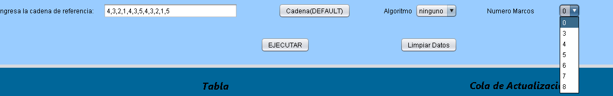

Manual de Usuario
Sea bienvenido al gestor
de memoria, tenemos como objetivo
mostrarte de que
manera un
sistema operativo gestiona la
memoria dependiendo del algoritmo
utilizado.
Al comenzar la primera imagen del
simulador que veras es la siguiente:
Pantalla de default que se
muestra al usuario
Ahora es importante definir
cuatro elementos importantes:
Circulo rojo campos de informacion para la
ejecución del algoritmo
Circulo naranja tabla donde se mostraran los
fallos y el remplazamiento
Circulo verde cola de actualización del
algoritmo
Circulo morado calculos de rendimiento de la
memoria
El campo de información tambien
tiene distintos elementos que debemos definir
detenidamente:
El boton de ingresar cadena de referencia
El boton de selección de algoritmo
El boton numero de marcos
Para poder iniciar el simulador
tenemos el boton iniciar y para borrar los
datos tenemos el boton limpiar datos
Para cerrar el programa
utilizaremos la tecla x que se encuentra en la
parte
superior derecha
Ahora probaremos el simulador con
el algoritmo FIFO
Algoritmo FIFO
Instrucciones de uso:
Ingresaremos la cadena de
referencia:
Proseguimos a elegir el algoritmo
FIFO
Continuamos en elegir el numero de
marcos

Nota: No debemos olvidar llenar ningun campo, de lo
contrario tendriamos un
error como el siguiente en cualquier de los casos:

Ya que hemos notado los posibles errores
que pueden suceder en un mal uso,
podemos proseguir despues de haber completado
todos los datos.
Finalmente podemos dar click en el boton
ejecutar.
Hemos notado que nos ha calculado
eficientemente la cola de actualización, los
calculos de rendimiento y la tabla de los fallos y el
remplazamiento de pagina.
Como opcional podemos guardar en un
archivo, daremos click en el boton guardar
archivo
Seleccionaremos el lugar donde queremos
guardar el archivo y lo
indentificaremos con un nombre por ultimo le daremos
guardar.
Ya que lo hemos guardado se nos mostrara un
mensaje de confirmación que se ha
guardado
correctamente.
En este caso se ha guardado en el
directorio
Por ultimo daremos click en el
archivo creado y nos daremos cuenta que se ha
guardado correctamente todo en un archivo txt.
Algoritmo LRU
Instrucciones de uso:
Ingresaremos la cadena de
referencia:
Proseguimos a elegir el
algoritmo LRU
Continuamos en elegir el
numero de marcos
Nota: Como hemos mencionado no debemos olvidar
llenar ningun campo, de lo contrario tendriamos
un
error como los mostrados anteriormente:
Podemos proseguir despues de haber
completado
todos los datos.
Finalmente podemos dar click en el
boton ejecutar.
Hemos notado que nos ha calculado
eficientemente la cola de actualización, los
calculos de rendimiento y la tabla de los fallos y
el
remplazamiento de pagina.
Como opcional podemos guardar en un
archivo, daremos click en el boton guardar
archivo
Seleccionaremos el lugar donde queremos
guardar el archivo y lo
indentificaremos con un nombre por ultimo le daremos
guardar.
Ya que lo hemos guardado se nos
mostrara un mensaje de confirmación que se ha
guardado
correctamente.

En este caso se ha guardado en el
directorio
Por ultimo daremos click en el
archivo creado y nos daremos cuenta que se
ha
guardado correctamente todo en un archivo
txt.
|